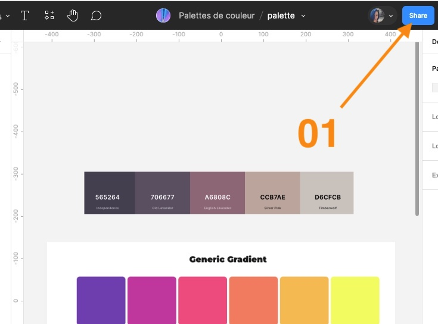

Pour cette étape du projet, vous devrez concevoir un moodboard qui vous servira de référence afin de désigner les différentes composantes de votre site.
Chaque membre de l’équipe doit créer son propre moodboard.
Aperçu du résultat 👇

Allez aussi voir d’autres page d’accueil d’autres organismes pour vous inspirer. Voici quelques exemples pour vous inspirer mais je m'attends à ce que vous fassiez vos recherches en dehors de cette liste :
- Fondation David Suzuki
- Nature Québec
- Revivre
- Equiterre
- Craque Bitume
- Moisson Montréal
- Fondation Dr. Julien
- La cantine pour tous
- Jeunesse j'écoute
- Fondation Véro et Louis
- Ruban Rose
- Fondation Canadienne du cancer
- Fondation des jeunes de la DPJ
Attention, validez votre moodboard avec les membres de votre équipe avant sa remise puisqu'il est interdit de présenter deux fois le même site dans une même équipe. Pour chacune de ces captures d'écran, expliquez brièvement l'élément que vous jugez intéressant.
Inclure dans un seul dossier le moodboard (PDF), le guide de styles (PDF) et la maquette (PDF).
Renommez votre dossier de travail 📁 au format suivant:
[nom de famille]_[prénom]_design_582-518MO
ex: ouellet_marie-michelle_design_582-518MO
Compressez ensuite votre dossier de travail en fichier zip 🗜
Remettez dans Devoir
En plus du dossier, remettre lien vers votre fichier Figma en ligne (n'oubliez pas le paramètre: anyone with the link can EDIT), voir procédure ci-bas:
